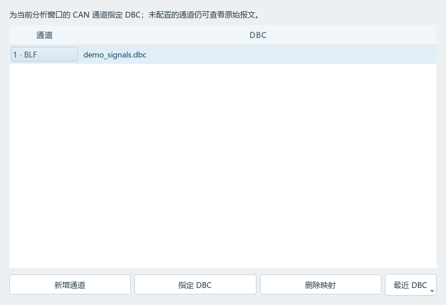
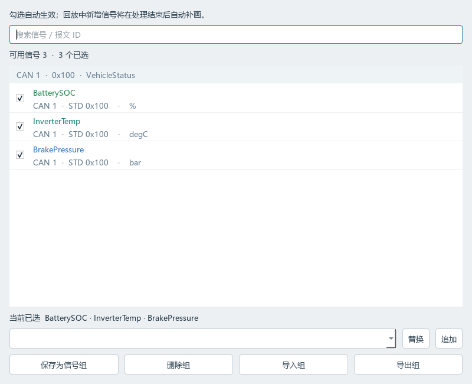

一次只能分析一个 BLF，难以对比多份记录。
排查偶发问题或比较不同工况时，需要反复切换文件，难以同时观察同一信号的变化。
在 CANFlow 中
CANFlow 支持多个独立分析窗口，可分别导入 BLF、配置 DBC 和选择信号，并排查看不同记录的波形。
每个窗口独立控制回放、游标与测量；顶部操作作用于当前选中的窗口。
核心痛点 / 01
围绕记录对比、多段回放和录制期间的历史回看，减少分析过程中的切换。
排查偶发问题或比较不同工况时，需要反复切换文件，难以同时观察同一信号的变化。
在 CANFlow 中
CANFlow 支持多个独立分析窗口，可分别导入 BLF、配置 DBC 和选择信号，并排查看不同记录的波形。
每个窗口独立控制回放、游标与测量；顶部操作作用于当前选中的窗口。
一次测试产生多段记录后，逐个打开文件会打断分析过程。
在 CANFlow 中
CANFlow 支持在同一窗口多选 BLF，按最早采集时间排序后依次回放，便于连续查看多段数据。
这里的拼接是串联回放，不会生成合并后的 BLF；保留原始采集时间与文件间空白，时间范围重叠的文件需放到不同窗口分析。
现场测试中，当前工程持续录制，但排查问题又需要查看此前的记录，容易打断采集流程。
在 CANFlow 中
CANFlow 作为独立的离线分析工具，可打开已完成录制并保存的历史 BLF，供录制工具继续采集期间回看分析。
CANFlow 本身不负责实时录制，也不读取正在写入的文件。
信号选择复用 / 02
把经常一起分析的信号保存成组，下次切换项目时，先配置该项目的通道与 DBC，再应用已有信号组。匹配的信号直接复用，将精力集中在需要调整的差异上。

V3 性能优化 · 历史测试
完整预检、原始样本与真实采集时间仍然保留。
三个约 1 GiB 合成文件：73.677 s → 28.936 s。完整扫描元数据，未变化文件在同一会话中复用预检结果。
查看导入验证约 1 GiB、16 通道密集解码场景：90.36 s → 66.05 s。提前准备解码器，按信号批量写入磁盘缓存，合并界面进度更新。
查看回放验证16 条曲线全范围查询：4.033 s → 0.0745 s。两级峰值概览保留孤立尖峰；近距离缩放、游标与间隔测量读取原始点。
查看测试条件以上为仓库记录的 Windows 本机单次合成数据实测；导入与回放使用不同基线，不代表所有真实文件的性能保证。后台处理耗时不包含完整界面绘图。
在信号列表选中目标信号，点击顶部“测量间隔”，再依次点击波形两次。A、B 吸附真实采样点，显示时间差 Δt；悬停结果查看采集时间和值。“清除标记”可重新测量。
所有解码样本保存在 SQLite 临时缓存，退出时清理。远距离概览用于绘图，精确时间请用真实采样标记测量。原始报文表保留最近 1000 条，完整 BLF 留在原文件。
当前边界：首次扫描随数据量增长；缓存仅限当前进程。单文件跳转及新增信号补画仍需顺序读取。曲线数量无硬限制，流畅度取决于机器与视野范围。
使用流程 / 03
在本机完成配置、复用与分析，无需上传 BLF 文件。
默认打开两个独立窗口，可按需新增。点击目标窗口，蓝色边框表示顶部操作的作用对象。
为当前窗口导入一个或多个已保存的 BLF，配置通道对应的 DBC，并选择信号或应用信号组。
顶部开始、暂停与停止仅作用于当前窗口。同窗多文件按最早采集时间排序，重叠记录放入不同窗口。
查看不同窗口中同一信号的变化，读取游标值并测量采样间隔。各窗口保留独立的视野与标记。
开始使用 / 04
前往 GitHub Releases 查看可用 Windows 构建及版本说明，选择与所需功能对应的版本。Windows EXE 无需安装 Python；不包含 BLF 或 DBC，请选择本地文件。
也可通过源码运行：安装 Python 3.10+ 后，在项目目录执行：
python -m venv .venv
.venv\Scripts\python.exe -m pip install -r requirements.txt
.venv\Scripts\python.exe run.py源码公开，按 PolyForm Noncommercial License 1.0.0 授权，仅限许可证规定的非商业用途；商业使用需另获许可。此许可证不是 OSI 开源许可证。
